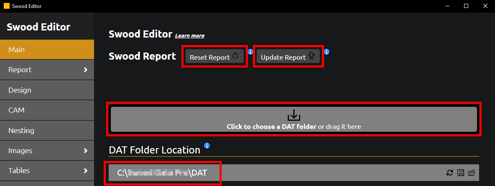

Swood Report Quickstart
Requirements
- Google Chrome.
- Internet connection.
- Swood 2022 SP1.2 or newer.
Swood Editor App
To set up the Swood Report, start by downloading and installing the Swood Editor app by clicking here. If the download doesn't start, please copy and paste the following link into a new tab: https://solidsolutions.azureedge.net/swood/SwoodEditor-Setup-1.1.0.exe.
The Swood Editor app allows you to modify report settings, such as columns, sorting orders, and output location, as well as change default Swood settings. This app is currently in the Beta stage, and we would appreciate any feedback for improvements.
The Swood Editor installation manager will also install the Solid Solutions License Manager as a prerequisite. This application is needed to activate the provided license key.
Please note that the Swood Editor app uses the same license as the Swood Report, so ensure that your license is active before creating a report.
Solid Solutions License Manager
To activate the provided license, launch the Solid Solutions License Manager and press the Add License button as shown in the image below. Learn More.

Setup the Swood Report
All report settings are stored within the DAT folder, located in the Swood Data Directory. Learn More.
Launch the Swood Editor app and ensure that the DAT folder is within your Swood Data Directory. The app will automatically search for the DAT folder, but you can also manually define it by clicking or dragging and dropping the folder into the specified field.
You can then click the Reset Report option to install a fresh instance of the report, or select Update Report to keep your previous settings. In both cases, the app will create a backup of your current DAT folder.
Please make sure to restart SolidWorks for the changes to take effect.
